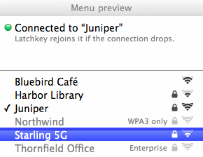

Latchkey
By XGZepto · Keeps Lion on Wi-Fi networks that offer WPA2 and WPA3 together.
Screenshots

Description
Most home routers now offer WPA2 and WPA3 on the same network. Lion doesn't recognize the WPA3 part, so it calls the network “WPA2 Enterprise” and won't join it. Latchkey removes the part Lion can't read and joins with plain WPA2, which the router still accepts.
It lives in the menu bar. You pick your network and type its password once, and Latchkey keeps the password in your keychain. If the connection drops and Lion can't get it back, Latchkey rejoins within a few seconds.
A latchkey is the key you carry to let yourself back in, which is what the app does for your Mac. 🔑
What's New in Version 0.1
- The first version: a menu bar app with a join dialog modelled on Lion's own.
- Passwords live in your keychain, and Latchkey can open at login.